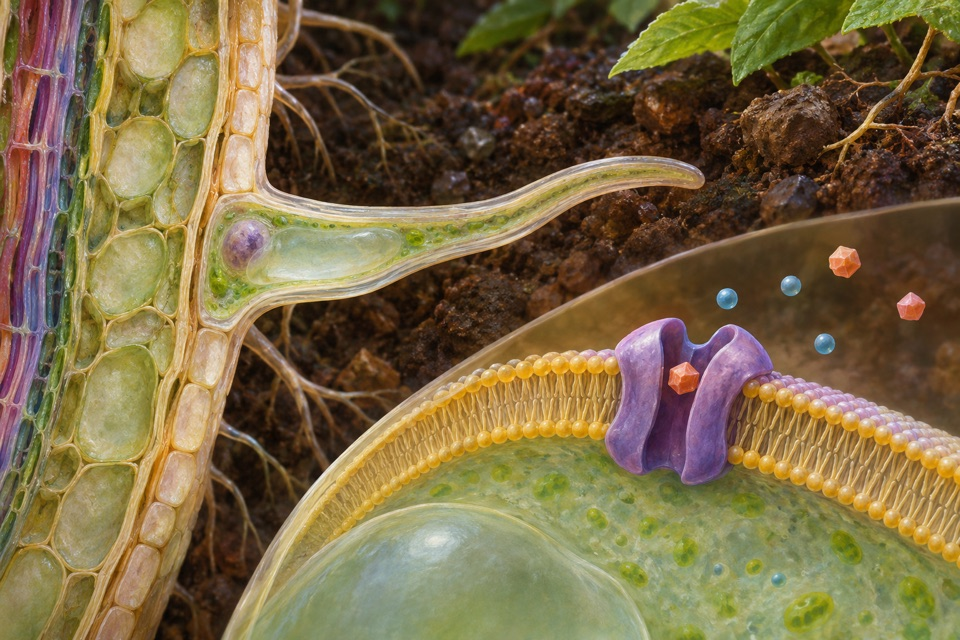

Module 01
High-affinity uptake of ammonium at roots
Measure ammonium uptake independently from nitrate transport and nitrogen assimilation.
Evidence recordOpen any of the ten modules to see the reported observation, its sources, and the research questions still open.

Measure ammonium uptake independently from nitrate transport and nitrogen assimilation.
Evidence record
Track Fe(II) oxidation and biological growth separately from mineral appearance.
Evidence record
Quantify zinc concentration in grain, accounting for milling and tissue distribution.
Evidence record
Measure interception steering under changing target trajectories.
Evidence record
Measure sulfate acquisition and separate inducible transport from downstream sulfur assimilation.
Evidence record
Track loss of dye absorbance and identify transformation products separately.
Evidence recordQuantify the α- and γ-tocopherol proportions and total tocopherol concentration in seed oil.
Evidence record
Measure pollen release against vibration amplitude and duration.
Evidence record
Measure root retention and shoot translocation of cadmium separately from growth, detoxification, or grain-quality conclusions.
Evidence recordMeasure lignin-derived carbon recovered as CO₂.
Evidence record